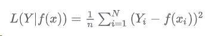
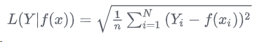
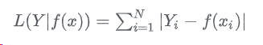
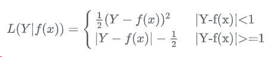
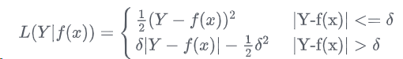
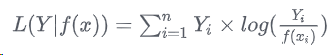
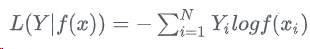
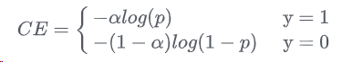
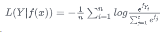

【学习笔记】损失函数（Loss Function）
$Y$表示真实值，$f(x)$表示预测值
基于距离度量的损失函数
均方误差损失函数（MSE）
公式：

在回归问题中，均方误差损失函数用于度量样本点到回归曲线的距离，通过最小化平方损失使样本点可以更好地拟合回归曲线。均方误差损失函数（MSE）的值越小，表示预测模型描述的样本数据具有越好的精确度。尽管MSE在图像和语音处理方面表现较弱，但它仍是评价信号质量的标准，在回归问题中，MSE常被作为模型的经验损失或算法的性能指标。
L2损失函数
公式：

L2损失又被称为欧氏距离，是一种常用的距离度量方法，通常用于度量数据点之间的相似度。由于L2损失具有凸性和可微性，且在独立、同分布的高斯噪声情况下，它能提供最大似然估计，使得它成为回归问题、模式识别、图像处理中最常使用的损失函数。
L1损失函数
公式：

L1损失又称为曼哈顿距离，表示残差的绝对值之和。L1损失函数对离群点有很好的鲁棒性，但它在残差为零处却不可导。另一个缺点是更新的梯度始终相同，也就是说，即使很小的损失值，梯度也很大，这样不利于模型的收敛。针对它的收敛问题，一般的解决办法是在优化算法中使用变化的学习率，在损失接近最小值时降低学习率。
Smooth L1损失函数
公式：

Smooth L1损失是由Girshick R在Fast R-CNN中提出的，主要用在目标检测中防止梯度爆炸。
huber损失函数
公式：

基于概率分布度量的损失函数
KL散度函数（相对熵）
公式：

KL散度（ Kullback-Leibler divergence）也被称为相对熵，是一种非对称度量方法，常用于度量两个概率分布之间的距离。KL散度也可以衡量两个随机分布之间的距离，两个随机分布的相似度越高的，它们的KL散度越小，当两个随机分布的差别增大时，它们的KL散度也会增大，因此KL散度可以用于比较文本标签或图像的相似性。基于KL散度的演化损失函数有JS散度函数。JS散度也称JS距离，用于衡量两个概率分布之间的相似度，它是基于KL散度的一种变形，消除了KL散度非对称的问题，与KL散度相比，它使得相似度判别更加准确。
相对熵是恒大于等于0的。当且仅当两分布相同时，相对熵等于0。
交叉熵损失
公式：

交叉熵是信息论中的一个概念，最初用于估算平均编码长度，引入机器学习后，用于评估当前训练得到的概率分布与真实分布的差异情况。为了使神经网络的每一层输出从线性组合转为非线性逼近，以提高模型的预测精度，在以交叉熵为损失函数的神经网络模型中一般选用tanh、sigmoid、softmax或ReLU作为激活函数。
交叉熵损失函数刻画了实际输出概率与期望输出概率之间的相似度，也就是交叉熵的值越小，两个概率分布就越接近，特别是在正负样本不均衡的分类问题中，常用交叉熵作为损失函数。目前，交叉熵损失函数是卷积神经网络中最常使用的分类损失函数，它可以有效避免梯度消散。在二分类情况下也叫做对数损失函数。
当正负样本不均衡的时候，通常会在交叉熵损失函数类别前面加个参数α

softmax损失函数
公式：

从标准形式上看，softmax损失函数应归到对数损失的范畴，在监督学习中，由于它被广泛使用，所以单独形成一个类别。softmax损失函数本质上是逻辑回归模型在多分类任务上的一种延伸，常作为CNN模型的损失函数。softmax损失函数的本质是将一个k维的任意实数向量x映射成另一个k维的实数向量，其中，输出向量中的每个元素的取值范围都是(0,1)，即softmax损失函数输出每个类别的预测概率。由于softmax损失函数具有类间可分性，被广泛用于分类、分割、人脸识别、图像自动标注和人脸验证等问题中，其特点是类间距离的优化效果非常好，但类内距离的优化效果比较差。
softmax损失函数具有类间可分性，在多分类和图像标注问题中，常用它解决特征分离问题。在基于卷积神经网络的分类问题中，一般使用softmax损失函数作为损失函数，但是softmax损失函数学习到的特征不具有足够的区分性，因此它常与对比损失或中心损失组合使用，以增强区分能力。
Focal loss